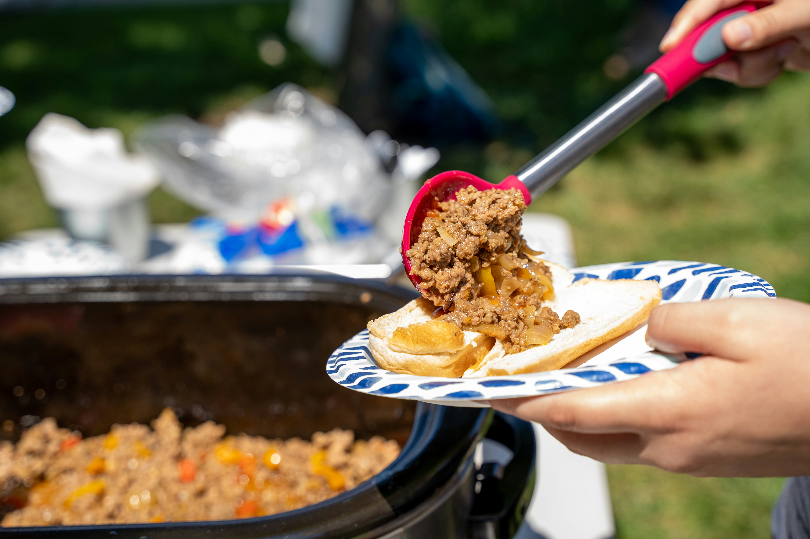

Sloppy Joe

Sloppy Joe
Summer is the perfect time for this easy and delicious dish!
Although it's great if you have a grill at your picnic, this easy meal can also be made in your regular kitchen.
The best part? I haven't met a kid so far who doesn't love it!
Ingredients
- Ground beef
- Ketchup or tomato sauce
- Hamburger buns
- Yellow mustard
- Brown sugar
Steps
- Brown the ground beef until no longer pink. Season with salt and pepper. Once brown, drain the grease.
- Add in brown sugar, mustard, and ketchup. Stir well.
- Reduce heat and allow meat to simmer on low for 5 minutes.
- Serve on hamburger buns
- Enjoy, but don't forget your napkins!
Home